Design Studio¶
Research and Prototyping¶
Reflect on your own RtD toolbox based on “your poster, your vision, and desired professional identity”. Reflect on the 4 different roles of prototyping by answering the following two questions. Which ones have you used and for what purposes? Which ones you haven’t used and how do you think could be interesting for you? Afterward, select the main roles of prototyping, combinations of them, and other design activities that you want to use.
My RtD toolbox will be a combination of Accumulative, Expansive, and Probing.
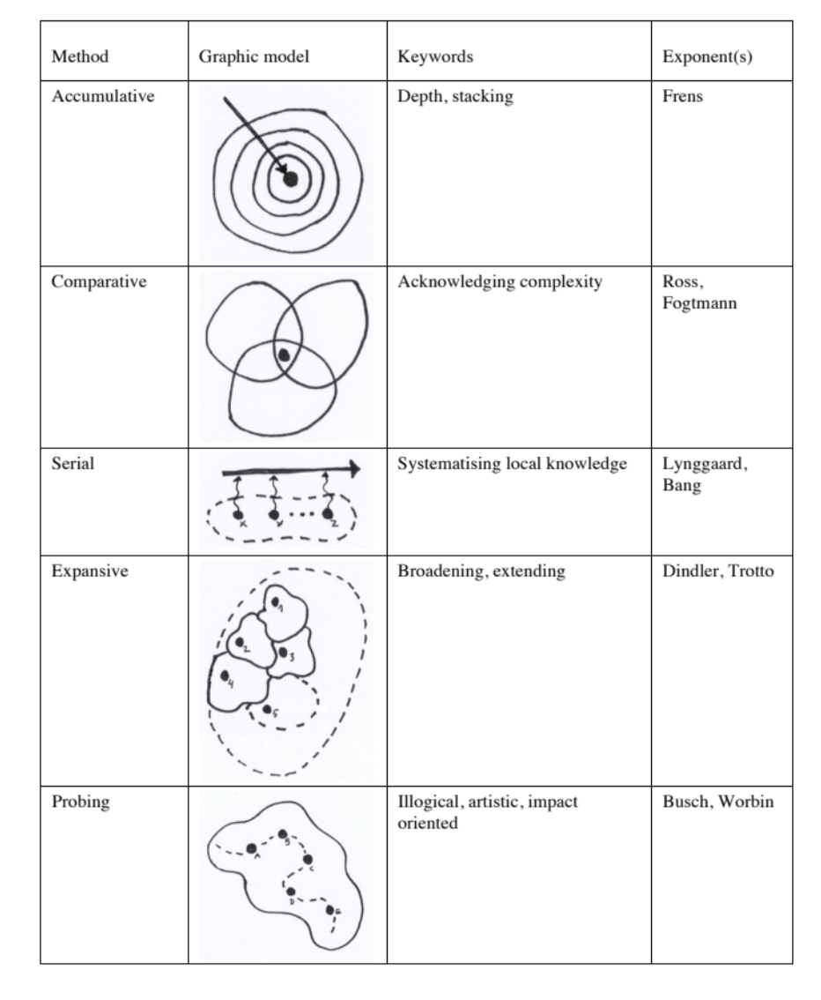 Based on my experience, when the research direction is clear and specific, I would use Accumulative. When I have a concept with a few ways to illustrate an idea, then Expansive would be my approach. Probing is a technique that I use when I am working with ambiguity.
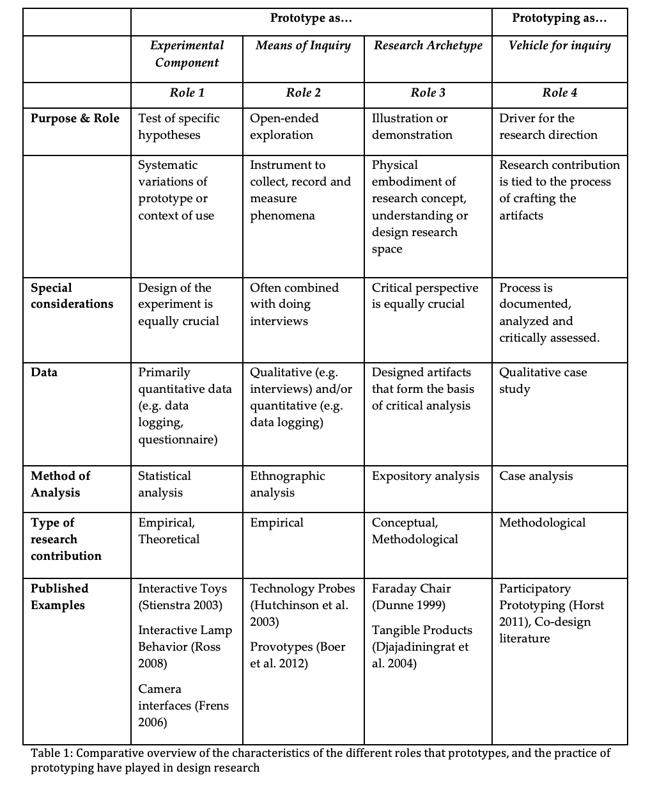
As a UIUX designer, the most common role of prototyping that I have been using is a prototype as an Experimental Component.
I prepared low-fid and high-fid prototypes to carry out usability testing or showcase to see if it works. Most of the time multiple prototypes were prepared for a scenario to see which provides a better experience. One of the examples that I did during my work: UX Case Study
I had experience using prototypes as a Means of Inquiry through my previous project: Reimagining My Sejahtera This is a way for collecting data and seeing how humans interact with the design. My Sejahtera is a covid-19 tracking and appointment management app in Malaysia, my partner and I redesign the app based on a series of research and interviews. We launched the designs and sent the prototype to people around us. Then, we use the heatmap to visualize the user flow throughout the process. We learned about users’ pain points and struggles through interviewing them. In the end, the final product produced is a series of interventions based on the data we collected.
My experience of prototyping as a Research Archetype is when I had to make ‘space’ in architecture school through a kit of parts: wood, strings, and tapes. We end up using the materials to visualize the scale for different spatial situations and floor plans. It is helpful as we were able to bring our project to 1:1 scale, physically experience and experiment with it before putting our ideas into rendering software. Our temporal installation is also tangible, this means that we can easily change the experience with just a few touches. Besides that, I also had experience choosing materials and finishing from catalogs while I was doing architecture-related projects.
I have not experienced using prototyping as a Vehicle of Enquiry. This can be an opportunity for me to apply this method in my upcoming projects. Using prototyping as a tool to document and analyze the process sounds interesting to me. I have never tried this method, so I might apply this on my future design product. It would be interesting to see how I can craft a digital or physical product through this method of prototyping, as normally I am inclined to use prototyping as a test of hypothesis or an open ended exploration due to my job nature. I also think this way of prototyping is very liberal, as the results will not be limited by a preconceived notion or a specific group of people.
Since I have quite some experiences with the different roles of prototyping, I would like to start with using prototyping as a Vehicle of Enquiry, the one that I experienced the least so that I can equip myself with this skill set. It seems to me that Probing might be a good pairing with this role of prototyping. With this in mind, I will set this pair as a general direction when executing my upcoming design project. At the same time, I will keep an open mind to include other RtD tools and roles of prototyping whenever it is necessary should the scenario change.
My Work Space¶
Create a “new workspace” where your present and desired RtD toolbox can be used. You need to map what you have available for your project (materials, infrastructure, things, and people) either here or in other places.
For this part of the assignment, I will be focusing on networking, resources and people that I have as I think they are the most crucial part to complete my future design intervention.


Communication Strategies¶
Choose 1 or more roles and formats from the list that was collectively created in class and put them into practice. Write a post with a reflection on the communication strategy that you are devising for the next stages of your project.
The communication strategies that I have chosen are:
-
Compiling the experiences you have already had to aid you when pitching or explaining your process to others can help you move forward.
-
Show your work or a specific topic from your own point of view.
-
Simple language for accessibility.
-
Being transparent about your intentions, offering a space where people you are trying to reach and connect can understand better your background, your values, your commitment, your motives, and your positionality – creating a foundation for trust.
-
Creating demos, demonstrators, or experiential prototypes.
-
Experiment with new formats, such as WhatsApp, videotaping etc
-
Photographing
-
Video journaling
-
Zoom gatherings
With that in mind, I created a series of pitch presentations to communicate my ideas.
I have compiled things that I learned in a simple and legible format using infographics. This will help readers to get a sense of the direction of the project.
I am also inspired to create a tutorial video for my crisis/hope box. This is something that I have never tried before. It will be a great starting point as there is a potential of reaching a wider audience not limited by location and time differences. Besides, I would also like to experiment with using hashtags to create a supportive community. I plan to execute my ideas in 4 different stages, and I am interested to use in-person meetings, zoom gatherings, WhatsApp and google meet to carry out the workshop.
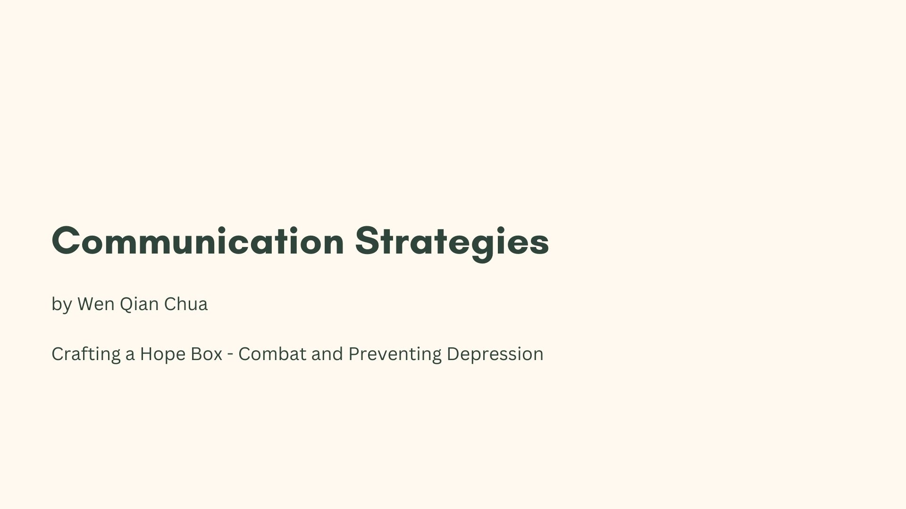
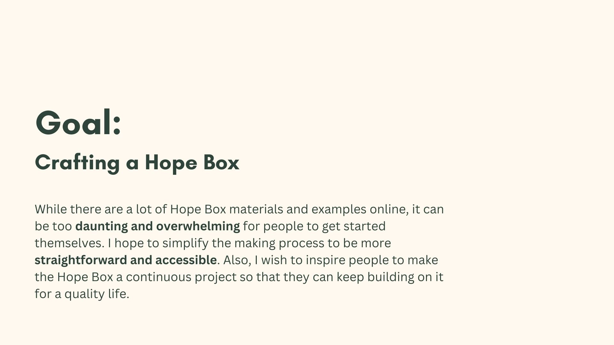
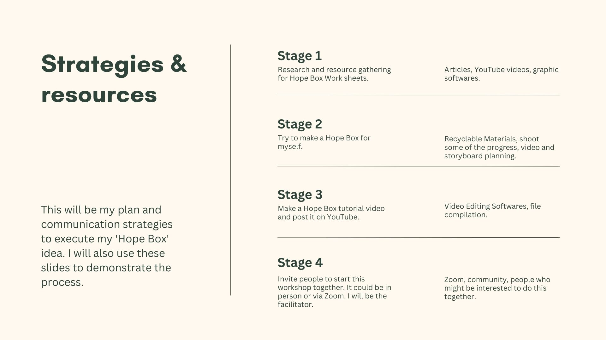
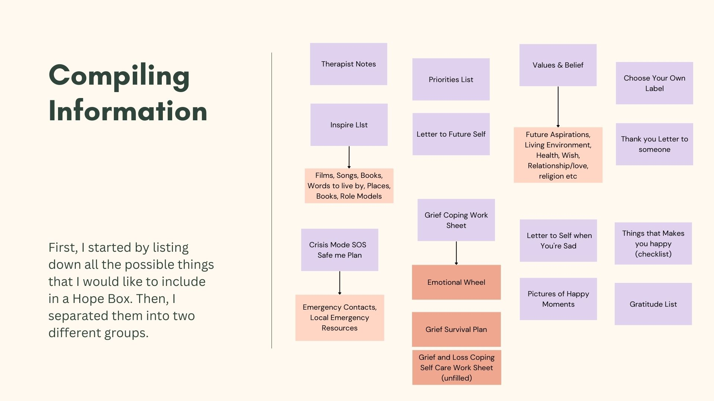
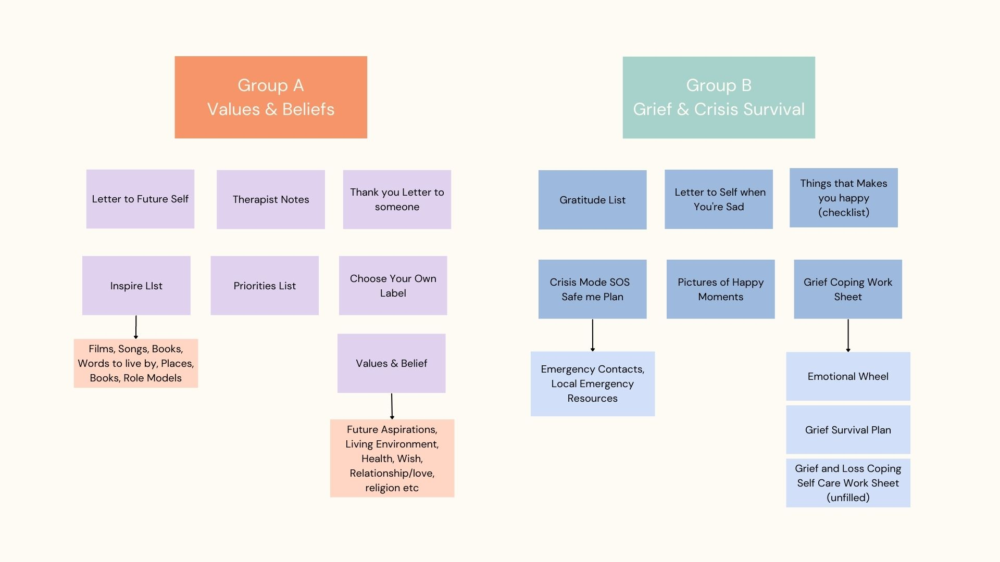
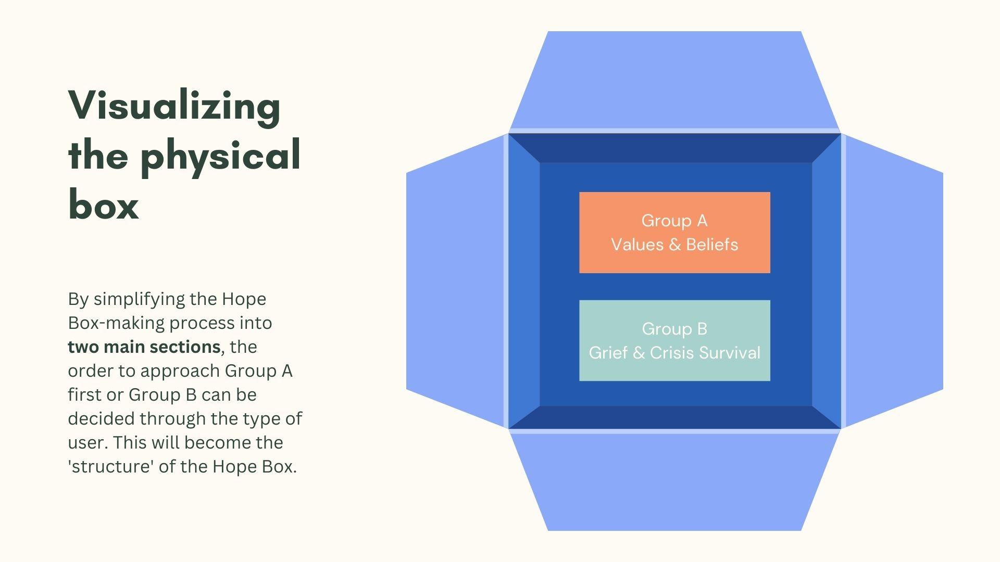
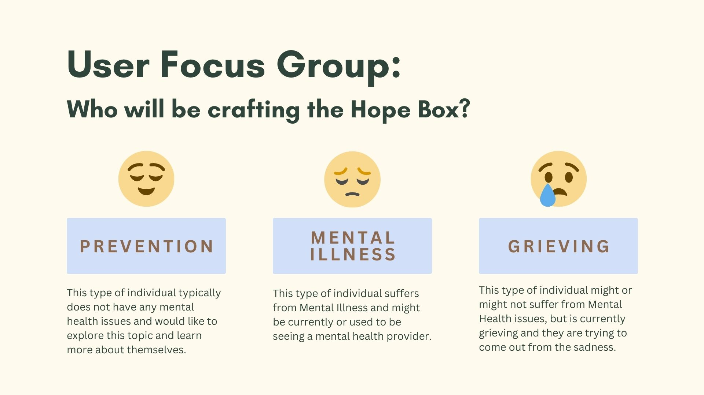
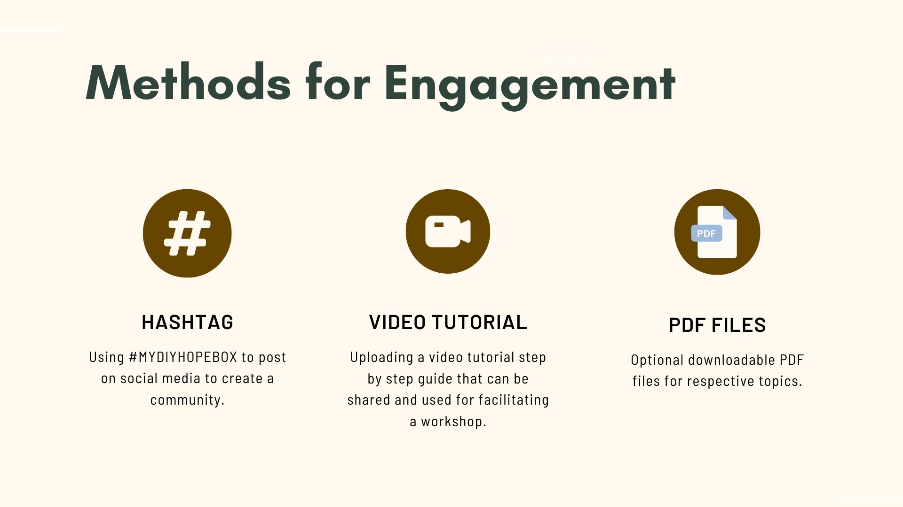
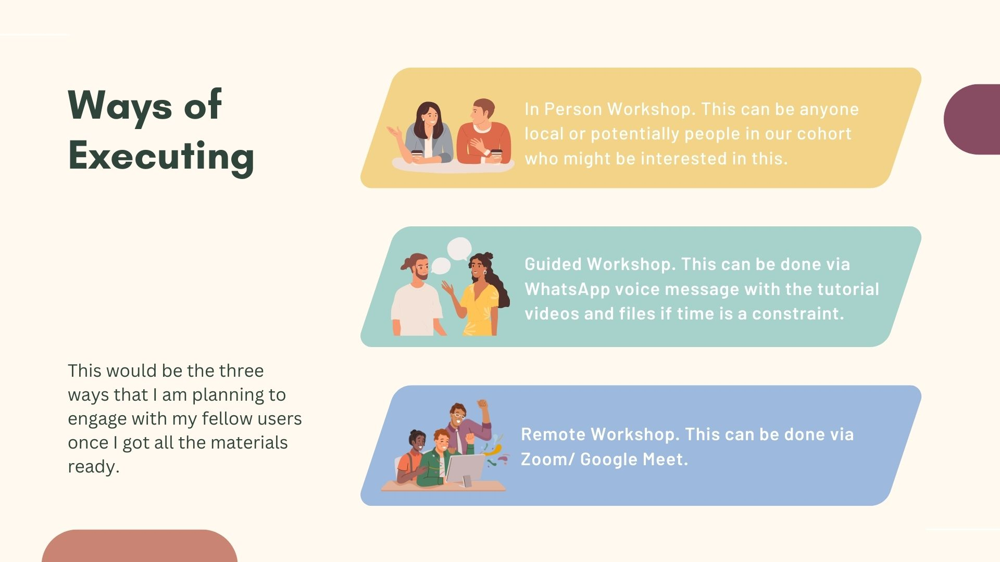
Intervention¶
For my intervention, I would like to learn about
- The willingness for people to embrace the opportunity to heal
- Is this model useful to encourage people to learn more about their family?
- Will the participant learn something new about themselves through activity?
- Will participants are open to participating in something like this in future?
From 24th - 27th of November, I was able to gather responses from 16 people through a guided activity and questionnaire using this google form.
I have used the Double Diamond Design Model as a framework, first exploring all the possibilities, then deciding which part I would like to focus on based on the data and feedback collected for any prospective design intervention.
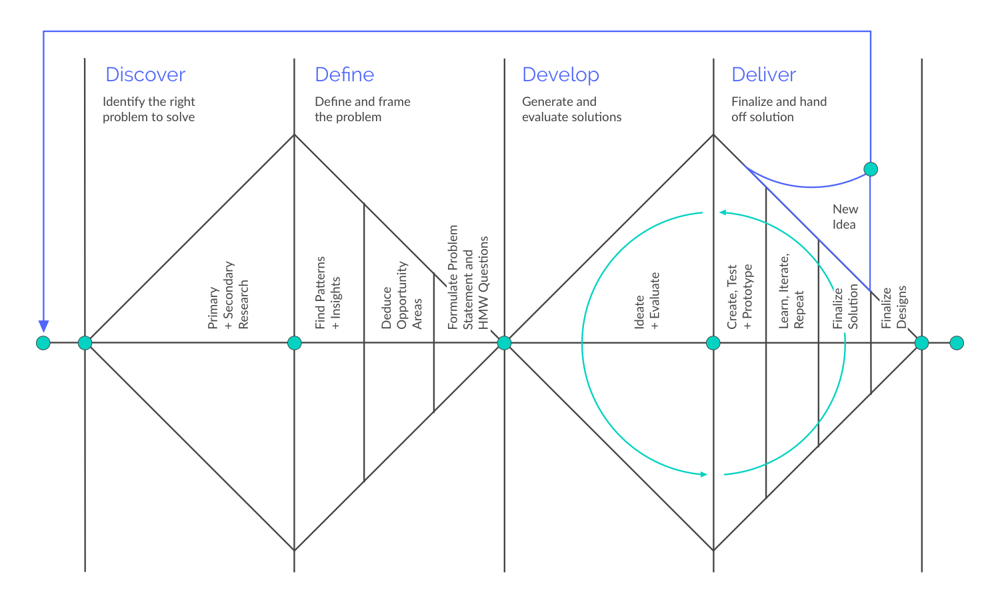
This intervention is divided into 4 parts. First, I created a short questionnaire as preparation and data gathering.
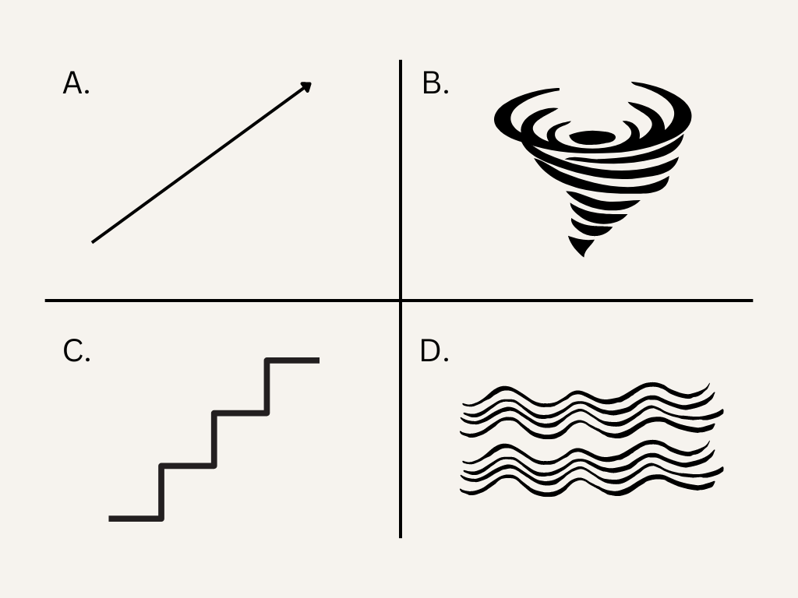
I have included this image to see if there is a relationship between people acting on the different hemispheres of the brain and the willingness to heal. (Thanks to Antonio for sharing this!)
Then, I prepared a short activity for the participants to trace their family tree and family history.
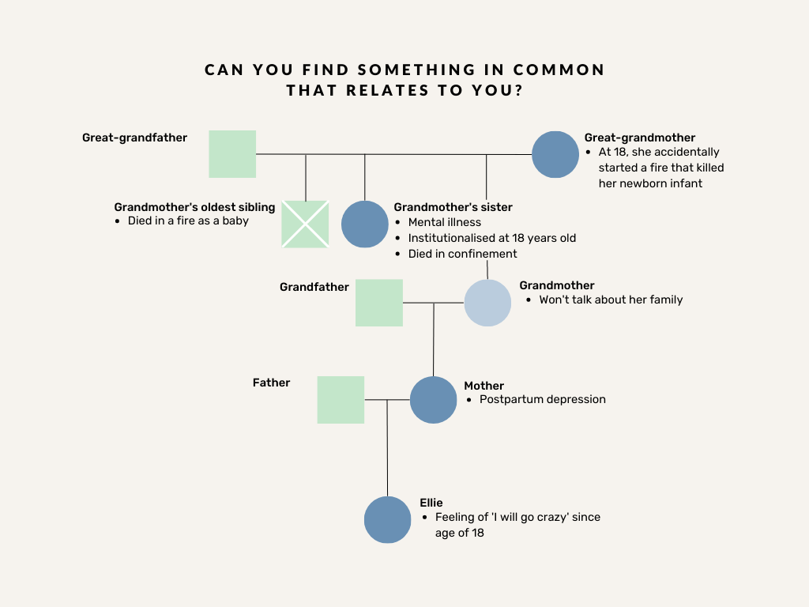
After that, they will be describing their parents, loved ones and close friends.
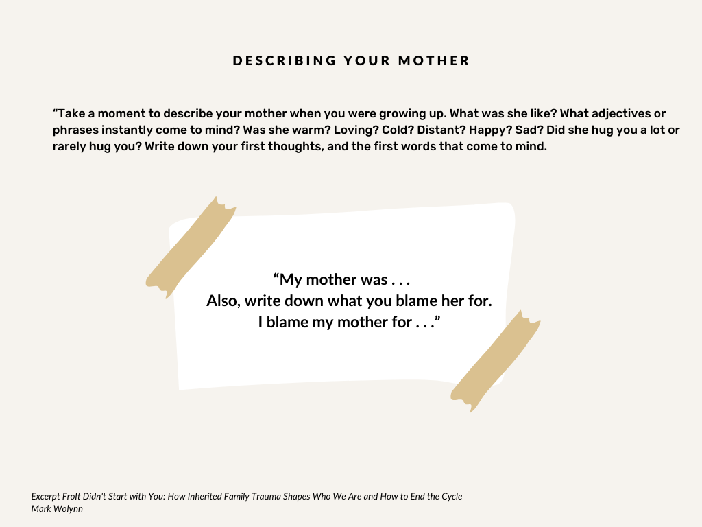
Last but not least, I have included some feedback questions to see how they feel after the whole activity.
I have been doing this through three ways, the process takes approximately 20-30 minutes
- Zoom/ Google meet
- In person
Tools
- Google Forms, Device
- Pen and Paper
Methodology
- This methodology has been excerpt partly from It didn’t start with you by Mark Wolynn.
- I have prepared the survey in 3 languages to accommodate my targeted users.
Demographics
People that have participated in this activity is from Malaysia, Indonesia, Spain, Korea, United States and Canada. I have reached out to family, friends, colleagues, and strangers that I have been talking to in a language learning app.
Their occupations are not limited to students, working professionals, athletes, and instructors.
While carrying out this activity in person, as some part of the activity is quite personal, I tried to look away when the participant is drawing their family tree and writing a description of their parents.
Key findings
-
Half of my participants do not suffer with mental health issues, and half of them think they might be suffering or are having mental health issues.
-
Most of them are quite close to their family members, their results ranging from the scale of 7-9.
-
When they are asked if they can name any major negative events that happened to their parents, grandparents, and great grandparents, there is a significant increase in the number of ‘No’ as they move further up the family tree. Most of the participants started to lose track of the historical events that might have happened.
-
The question ‘how well do you think you know your family history’ is repeated twice on my survey to find out how the activity that is carried out will impact the participants’ thoughts. We can see this in comparison as the same question is asked before and after the activity. There is a reduction in number for people who voted for scale 7-9 after doing the exercise. We can deduce that after doing the exercise, participants realize that they might not know their family history as well as they think they do.
-
After the exercise, there is quite some positive response that most participants have the intention, or at least not refusing to learn more about their family history.
-
After the activity, we can see that more than half of the participants cannot find something in common that they might share with their ancestors. This is interesting to see as about half of my participants voted that they do not suffer with any mental health issues. I wonder if these two data might be related. Nevertheless, it is great to see that at least close to half of the votes shows that the participants start to realize the relationship between their family history and themselves.
-
For the part of writing a description of their parents and loved ones, based on the data that I have collected, about half of my participants felt surprised after the activity. Thus they might have discovered something that they do not know about themselves previously.
-
There are some people that feels uncomfortable, thus this might be something to take note of in the future sessions. Is this feeling of discomfort beneficial for the activity or should we aim for reducing the discomfort? Most of my participants learned something new about themselves after carrying out this activity.
-
Most of my participants are interested to find out more information about their family history after this exercise.
-
Atleast about half of the participants might have experience some change in how the perceive themselves after this activity.
-
Last but not least, there is no negative feedback for the desire to participate in an activity like this in future.
Based on the activity, it is evident that
-
Not all people is open to talk about their family
-
Some space and privacy might be needed should a bigger group of workshops be conducted, or perhaps it is better if we have a private group eg: a group of friends that know each other and are comfortable in sharing these.
Conclusion
Overall, this is an interesting experience for me as it is uncomfortable, especially for me to ask strangers that I have just been talking to for a few days to participate in this activity.
It also took me some time to design this as in the beginning, I planned to collect the deliverables (their family tree and their descriptions of their loved ones). However, I find that maybe it is too personal for me to have access to all the information. Thus, I switched it up and used a google form instead so that the participants can participate without disclosing their family history.
I prefer to do this activity with someone that I know well. However, I extended out of my comfort zone as most of my participants are randomly selected. This also helps me to put things into perspective, and ensure the compatibility of this activity for a group of strangers.
For future prospective intervention, I would still be interested in finding subtle ways to intervene with the healing process. I hope that it would be a small move, but leaves a big impact to the participants. I also hope that in my future prototype or design, I can provide options to the participants to take charge in designing their own healing and restorative process.